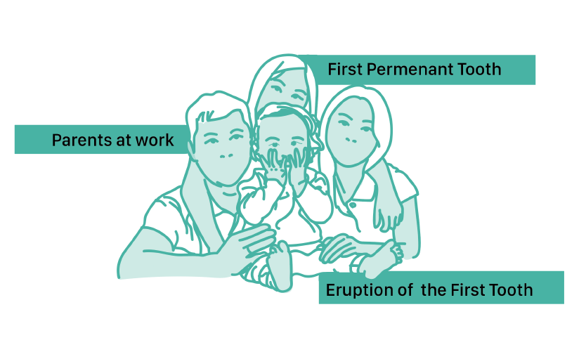
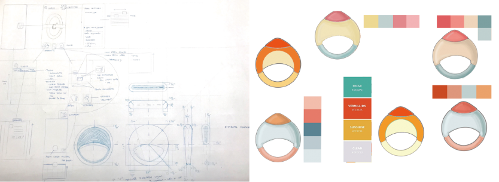
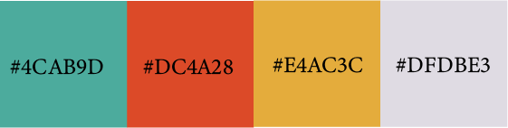

Background
During 2017 Fall I got the assignment to design a baby teether for modern users. I decided to put my focus on the problems between modern families in this digital world.My main intension of this assignment is to initialling connection between baby products with digital technology.
Problems
Busy parents cannot look after their kids by themselves. According to statistic, nearly 70% of American families hire at least one nanny or babysitters. Unfortunately the parents will lost some important moments during their kids' growth. Eruption of the first tooth and growth of the first permanent tooth are two of the moments.
Solution
Average time of a person touching ones phone is 2,617 times per day. My idea is to present those surprise moments of the baby through digital sources. This way the parents can track their babies' safety, growth and health conditions by putting sensor in the baby teether to connect with the digital sources.

What if we can witness the moment through the phone?
Idea Development

Color Palettes
